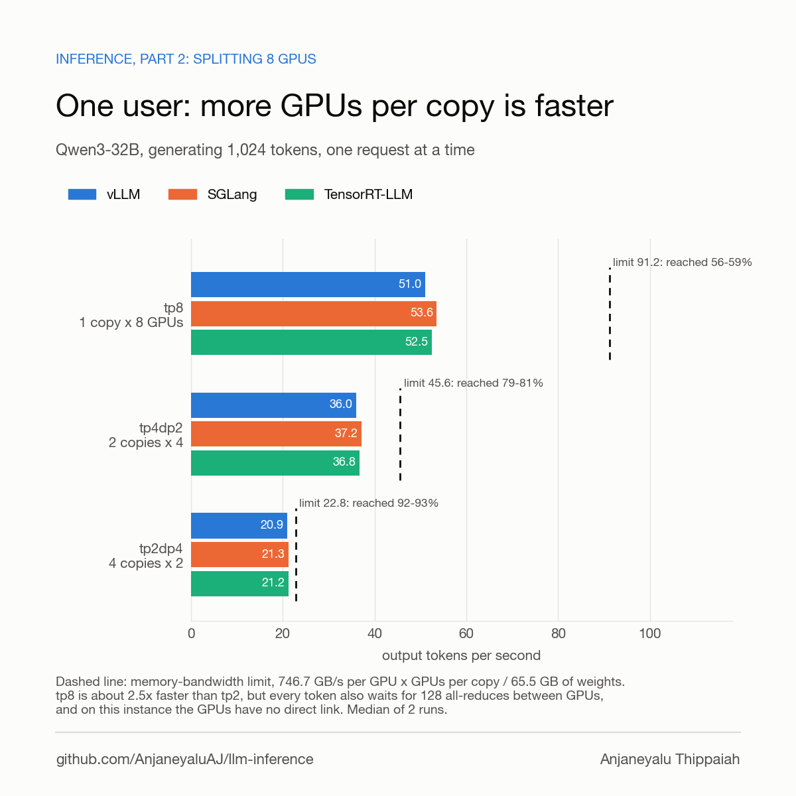
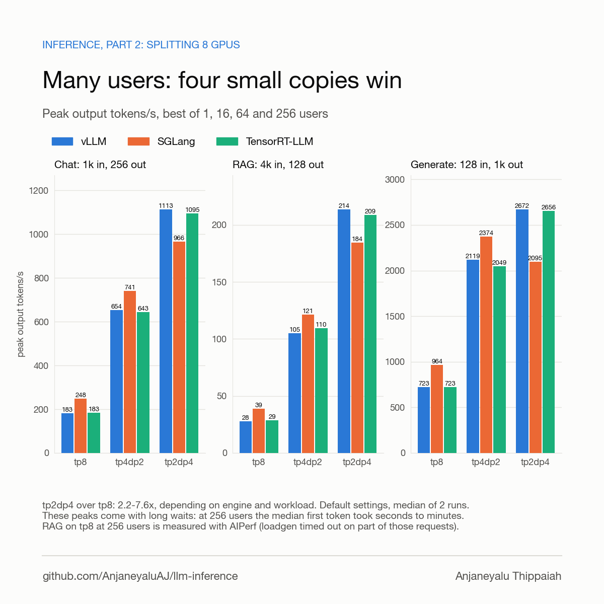
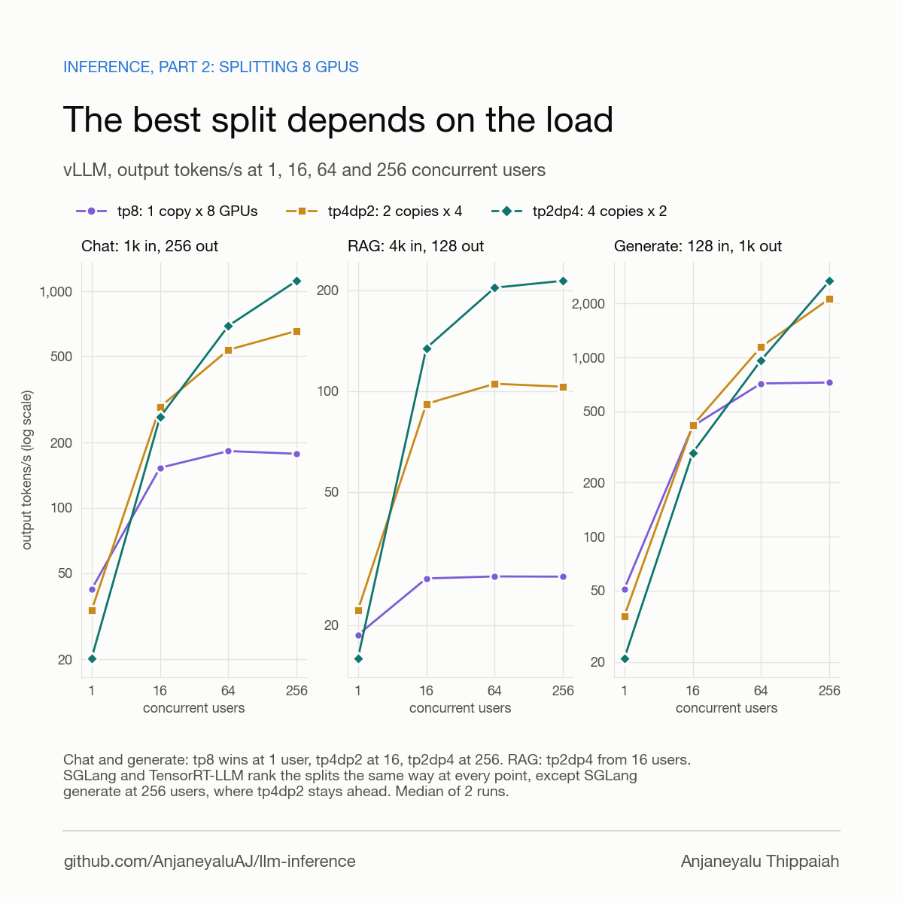

Eight GPUs with no fast links, and three predictions I got wrong
A 32B model that does not fit on one GPU, eight GPUs to serve it with, and one question: one big copy of the model, or several small ones? Three engines, two benchmark tools, 146,232 requests.
Code and data: AnjaneyaluAJ/llm-inference. The plan with its predictions, every request, and the server and GPU logs.
Measured: 22 to 24 November 2026, on one AWS g6e.48xlarge (8x NVIDIA L40S).
In Part 1 I served an 8B model on one GPU with three engines, and found that the traffic mattered far more than the engine. This time the model is Qwen3-32B. Its weights take 65.5 GB in BF16, and an L40S has 48 GB, so it needs at least two GPUs.
With eight GPUs there are two ways to use them, and you can mix the two:
- Tensor parallelism (TP): one copy of the model, with every layer cut into slices across several GPUs. Each GPU holds less, so each token is faster to produce. But the GPUs must combine their partial results twice per layer, for every token.
- Data parallelism (DP): several independent copies, each answering different users. No communication between copies, but each copy has fewer GPUs and less memory to spare.
I tested three splits of the same eight GPUs:
| Split | Copies | GPUs each | Context room each* |
|---|---|---|---|
| tp8 | 1 | 8 | 1,069,056 |
| tp4dp2 | 2 | 4 | 407,552 |
| tp2dp4 | 4 | 2 | 78,848 |
*Tokens of KV cache (the per-user context) each copy has room for, as reported by vLLM at start-up. TensorRT-LLM reported 4-6% less at tp8 and tp4dp2 and 2% more at tp2dp4. SGLang reported 14-16% less at tp8 and tp4dp2, and an estimated 51k at tp2dp4 (its start-up line was lost from a truncated log).
The setup
- Model: Qwen3-32B in BF16.
- Hardware: AWS g6e.48xlarge, 8x NVIDIA L40S 48 GB ($30.13 an hour on-demand in us-west-2).
- Engines: vLLM v0.34.0, SGLang v0.5.23 and TensorRT-LLM 1.3.0, the same images as Part 1, at default settings. Only the context length (8,192) and the split were set.
- Several copies: vLLM and SGLang have a built-in data-parallel option. TensorRT-LLM has none for this kind of model, so it ran as separate servers behind an nginx proxy that sends each request to the least busy one.
- Traffic: the three workloads from Part 1. Chat (1k tokens in, 256 out), RAG (4k in, 128 out) and generate (128 in, 1k out), at 1, 16, 64 and 256 users at once, two repeats, in shuffled order.
- Two tools: every point was measured by my own load generator and then by NVIDIA AIPerf, back to back on the same running server. 73,116 requests each, 146,232 in all, over about 55 hours of measurement.
- A correctness check: every server answered 100 GSM8K math questions. All nine split and engine pairs scored 93-95%, so none of the parallel setups was quietly broken.
First, look at the wiring
Tensor parallelism lives or dies by how fast the GPUs can talk to each other. So before the sweep I measured it. Two things stood out.
- No direct GPU-to-GPU path. On this instance no pair of GPUs supports peer-to-peer access. TensorRT-LLM says so in its start-up log ("P2P not supported between local devices"), and
nvidia-smiagrees. Data moving between GPUs goes through the host's memory. - Slow collective operations. An all-reduce, the operation tensor parallelism uses to combine results, took 55 µs for a small 10 KB message on 2 GPUs, 60 µs on 4 and 86 µs on 8. For large messages the 8 GPUs together reached 2.3 GB/s of bus bandwidth. For scale, a pair of GPUs connected by NVLink moves hundreds of GB/s.
So communication is expensive here, and most expensive across all eight GPUs.
The predictions
As in Part 1, I committed the predictions to GitHub before any engine ran. The ceiling for one user is the same arithmetic as before: every token reads all the weights once, now spread across the GPUs of one copy. At 746.7 GB/s per GPU that gives 22.8 tokens/s for 2 GPUs, 45.6 for 4 and 91.2 for 8.
| # | Prediction | Result |
|---|---|---|
| 1 | One user: tp2 19-22, tp4 33-42, tp8 45-70 tokens/s, with tp8 furthest below its ceiling | Held 9 of 9 in range |
| 2 | Many users: tp2dp4 has the highest peak on chat and generate, at least 20% above tp8 | Held for vLLM and TensorRT-LLM. SGLang's best generate split was tp4dp2 |
| 3 | RAG at 256 users: tp2dp4 runs out of context room, so tp4dp2 or tp8 matches or beats it | Wrong tp2dp4 won on all three engines |
| 4 | At a given split, the engines stay within about 10% of each other | Wrong 15-39% apart, and the order flips |
| 5 | AIPerf and my client agree within 3% at every point | Wrong as stated 85 of 108 points |
One user: more GPUs per copy is faster
With one user, tp8 was the fastest: 51-54 tokens/s, about 2.5x tp2's 21. But it reached only 56-59% of its ceiling, against 92-93% for tp2. Each token needs 128 all-reduces, and at 86 µs each on 8 GPUs that alone is about 11 ms per token. Reading the weights, spread over eight GPUs, also takes about 11 ms per token. So by this rough estimate, made after the run, communication costs as much as the actual work. The engines did a little better than that estimate, likely by overlapping some of the two.

Many users: four small copies win, by a lot
Push more users at the server and the order reverses. At peak throughput, four copies on two GPUs each beat one copy on eight GPUs by 2.2x to 7.6x, depending on the engine and workload. On RAG, vLLM served 214 tokens/s as tp2dp4 and 28 as tp8.

The more interesting picture is how the best split changes with the number of users.

For chat and generate, the winner moves from tp8 at one user, to tp4dp2 at 16 users, to tp2dp4 at 256. All three engines rank the splits the same way at every point except one (SGLang on generate at 256 users, where tp4dp2 stayed ahead). On generate at 64 users, tp4dp2 is still ahead on all three engines. There is no single best split, only the best split for a given load.
What I got wrong
Prediction 3: I worried about memory, and the cost was in communication
I expected RAG at 256 users to be where tp2dp4 lost. Each RAG request carries about 4,200 tokens of context. 256 users across four copies is 64 per copy, or about 270k tokens of context needed per copy, and each tp2dp4 copy only has room for 51-81k depending on the engine. That part was right: most requests waited in a queue.
What I underestimated was what tp8 pays to read a long prompt. After the run, I estimated it. Qwen3-32B has 64 layers and does 2 all-reduces per layer. For one 4,096-token prompt each all-reduce carries 42 MB, and at the measured 8-GPU speed that is about 32 ms each. That comes to about 4.1 seconds of communication per prompt. At 256 users, tp8 finished one RAG request every 4.6 seconds on vLLM and 4.5 on TensorRT-LLM. Communication alone accounts for most of that. (SGLang managed 3.3 seconds, faster than the estimate, so the estimate is not the whole story for that engine.)
The same effect shows up with a single user. On RAG, tp8 is not the fastest split even for one user: tp4dp2 beats it on all three engines, by about 19% on vLLM and TensorRT-LLM and 2% on SGLang. Long prompts are where tensor parallelism over slow links hurts most.
Prediction 4: the engine ranking depends on the split
I expected the engines to stay close, as they had on one GPU. They did not, and no engine won everywhere:
- tp8: SGLang led all three workloads by 33-36% (generate: 964 tokens/s against 723 for both others).
- tp4dp2: SGLang led again, by 10-13%.
- tp2dp4: SGLang came last. On generate it reached 2,095 tokens/s against 2,672 for vLLM. Its copies had the least room for context, about 51k tokens against 79-81k, and generate at 256 users needs up to 74k per copy. That fits the lower number, but I did not test it directly.
Throughput is also not the whole picture. At tp8 with 256 chat users, SGLang served 40% more tokens/s than vLLM (248 against 177), but its median user waited 103 seconds for the first token, against 9 seconds on vLLM.
Prediction 5: the two tools, again
AIPerf and my client agreed within 3% on 85 of 108 points, with a median ratio of 1.006. The exceptions have known causes. 19 of them are at 1 or 16 users, where AIPerf reads 3-14% high because it re-uses its warm-up prompts in the measured run, the issue I found in Part 1. The engine has those prompts cached, so their prefill is skipped, and on tp8 prefill is the expensive part. Two more are tp8 RAG at 256 users, where my client's 600-second timeout cut off requests that were still waiting; I report AIPerf's numbers there. The last two are the two points with the largest difference between repeats.
What it costs
At $30.13 an hour, divided by the peak throughput:
| Per million output tokens, vLLM | Chat | RAG | Generate |
|---|---|---|---|
| tp8 | $45.74 | $298.92 | $11.58 |
| tp4dp2 | $12.80 | $79.71 | $3.95 |
| tp2dp4 | $7.52 | $39.11 | $3.13 |
At peak throughput with no latency target, so users waited seconds to minutes for the first token. Not comparable with Part 1's costs, which were measured within latency targets. Other engines are in the write-up.
Same hardware, same model, same engine: choosing the split changed the cost by up to 7.6x. On this machine, the choice of split mattered far more than the choice of engine.
The loose end from Part 1
In Part 1, 18 requests finished with the right token count but no text, and I could not tell whether the engine or my client was at fault. This run produced 279 of them, all on generate and all on vLLM or TensorRT-LLM. This time my client saved the raw stream for each one, and every chunk's text field is empty from first to last. The engine sent no text, so the client did not lose it.
They also depend on the prompt. The prompts are the same across splits and engines, and vLLM and TensorRT-LLM fail on the same or nearly the same number of requests at every point, while SGLang never fails on them. My best guess, not yet verified: my client asks for exactly 1,024 tokens and tells the engine to ignore the end-of-text token. If the model's first token is end-of-text, generation continues with tokens that decode to nothing. Checking it needs the generated token IDs, which I did not save.
What I learned
- Measure the wiring before you pick a split. Eight GPUs in one box does not mean eight GPUs that can talk quickly. Here a 10 KB all-reduce took 86 µs and no pair of GPUs could reach another directly. On hardware with NVLink, tensor parallelism costs far less, and these results could look very different.
- Choose the split by the load you expect. For a single user who wants the fastest reply, tp8 was 2.5x faster than tp2. For many users, four small copies served 2.2-7.6x more. A split that fits a demo can be the wrong one in production.
- Long prompts are where tensor parallelism hurts most. The cost of reading a prompt grows with its length, and on slow links that cost is communication. On RAG, tp8 lost even with one user.
- An engine benchmark holds for one setup only. SGLang went from first by a third at tp8 to last at tp2dp4. "Engine X is fastest" needs the hardware, the split and the traffic attached.
- Wrong predictions were the most useful part. The three I got wrong are where I learned something: what prefill costs over PCIe, how much the engines differ at different splits, and where the two benchmark tools part ways.
What this does not show
- One model, one instance type, default engine settings. No NVLink.
- Two repeats. The median difference between them was 0.3%, and 107 of 108 points were within 5%.
- Peaks with no latency target. Unlike Part 1, I did not score these splits against latency targets.
- The communication estimates and the costs were worked out after the run. They were not predictions.
Next: smaller numbers
If the model is the problem, make it smaller. Part 3 serves the same model in FP8 and 4-bit, where it fits on one GPU, so the split can go to eight independent copies with no communication at all.
Part 3 is out: Making a 32B model smaller: about 2.5x cheaper, for 1-2 points of accuracy.
Write-up: results/step2 · Plan and predictions: docs/step2_parallel_plan.md · Part 3 plan: docs/step3_quant_plan.md
Anjaneyalu T. Questions and corrections are welcome: email or LinkedIn.